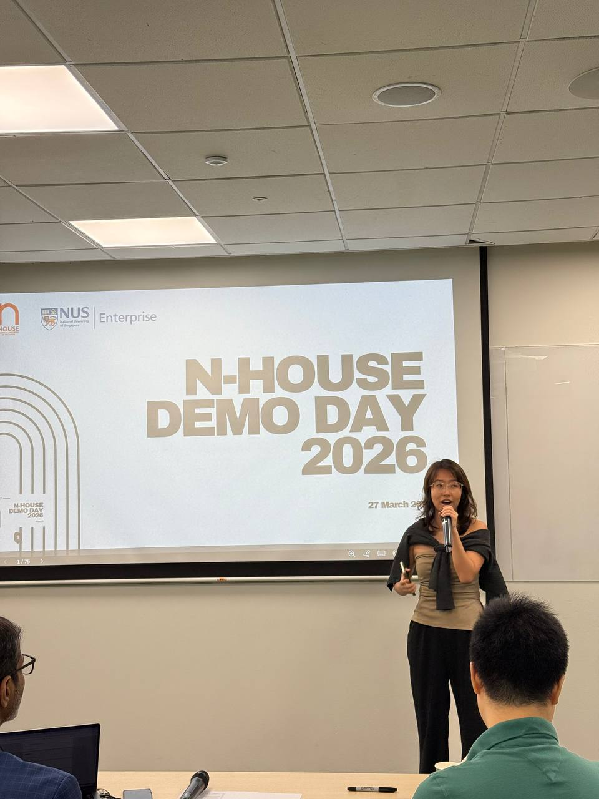
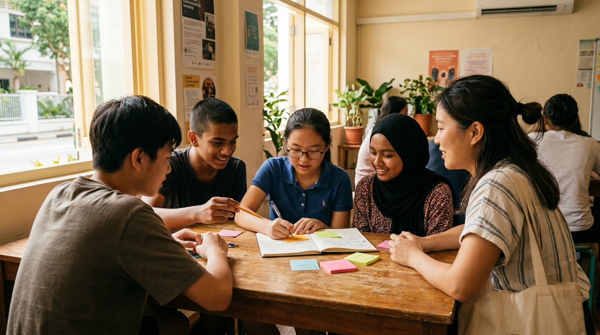
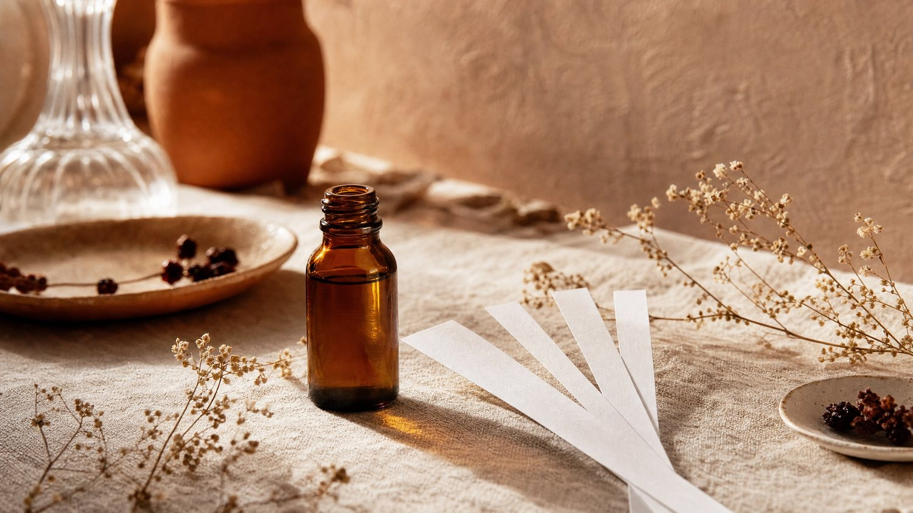
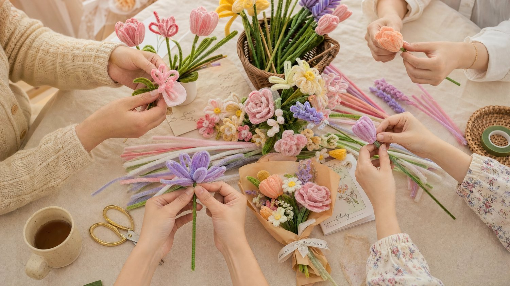
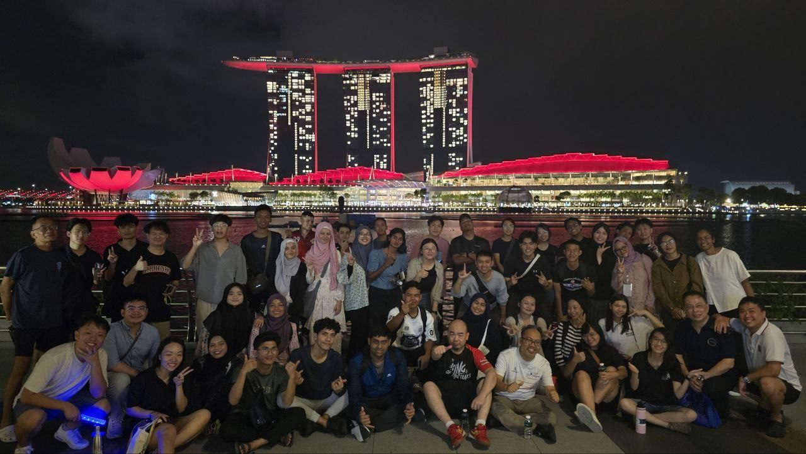
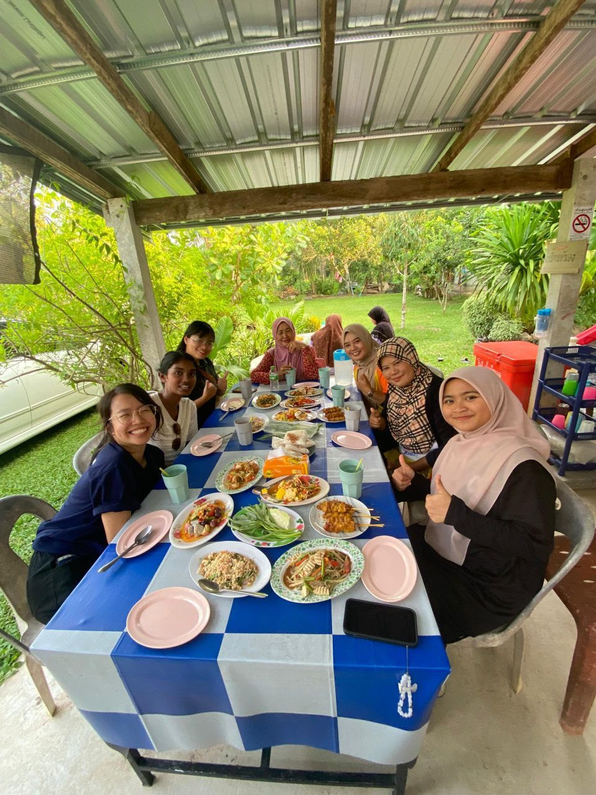

While AI scales the virtual world, my rebellion is scaling the physical one. I design offline experiences for a hyper-digital world. I host, facilitate, and design experiences that engage with the rest of your senses.
Three doors, one me. Pick the one that fits — and skip straight to it.
You need a host who keeps the room warm, the timing tight, and people actually present.
Engineered food aromas that turn foot traffic into hungry customers. Scentura is now recruiting a few F&B pilot partners.
Hands-on floral creation as the icebreaker — team-building and curated mixers, with letsbloom.
On paper, my week makes no sense. One day I'm holding a mic in front of a room. The next I'm designing a workshop, rewriting a pitch, or prepping for a facilitation session. People keep telling me to pick one thing.
I'm graduating into a lot of noise — the job market is brutal, AI is coming for the work. But here's the quieter thing I believe: there are still some things AI can't take from us. The energy of a room when strangers actually connect. You know the way a room shifts when someone shares something personal, honest, or how the entire room is laughing together? I don't think AI will be able to create those environments at all.
And I'm not anti-AI, haha — I actually love it. It saves me hours (it's part of why you're even reading this site). But in a world obsessed with artificial intelligence, I am dedicating this season of my life to building the exact opposite: experiences, ventures and spaces that are aggressively human. That's the thread connecting it all: meet people, go deeper, and stay connected.
Each one is a venture in bringing people back together — in the real world. Click in for the full story.

Events, demo days and panels — from an 80-person company event to startup demo days. I keep the energy warm, the timing tight, and the room awake.
Explore →
Guiding students and young leaders to their own aha — in schools, community projects and youth programmes.
Explore →
Sensory architecture for F&B — engineering food aromas that turn passing foot traffic into hungry customers. Now piloting.
Explore →
Experiential events & mingling — hands-on floral creation as the icebreaker, for teams, friends, or community groups.
Explore →
Honest notes on the work — startups, rejection, solo travel, and figuring it out. On Medium.
Read →
It started in a newsroom. I was a student journalist at Singapore Press Holdings (SPH), interviewing founders and business owners — and I fell in love with the stories people share when someone really listens. That curiosity never left me.
It's taken me to a lot of unfamiliar places: being the only Singaporean at a company in Indonesia 🇮🇩, spending a summer at Berkeley 🇺🇸, a year in Toronto 🇨🇦 for a startup stint, and staying with host families on a road trip across the region 🇲🇾🇹🇭. Each time, I was the new person — figuring out how to fit in and understand everyone.
Connection isn't automatic. You build it slowly, by paying attention.
These days, I get to build it for other people. Everything I do — hosting 🎤, facilitating 💕, designing experiences 🤝 — comes down to one thing: building community 🤍. I want people to leave a room feeling a little more connected than when they walked in.
I don't travel to collect stamps. I travel mostly because I'm genuinely curious about how people live and find meaning — and that same curiosity is behind everything here.
I'm still early in this journey — and I see that as a promise, not a weakness. Every project I take on gets my full care, preparation, and presence. I'm not here to coast on a reputation; I'm here to earn your trust, one room at a time.
I clarify the audience, the tone, the flow, and the feeling you want in the room — long before I show up.
I care about making people feel comfortable and seen, not just entertained.
Fresh eyes, high care, and the hunger that only comes from someone still building her name.
Honestly I was smiling from start to finish. She just kept the whole room with her.
— Audience member
The room never went flat. She kept us on time without it ever feeling rushed.
— Event organiser, corporate townhall
Jocelyn is such a great listener — like she properly listens — and then asks the one question that makes you think harder about your own answer. I left understanding myself a bit better than when I walked in.
— Student, facilitated reflection session
Planning an event, building a brand, or just want to swap notes? There's one button for that — tell me what you need and I'll point us the right way.
P.S. Curious how a non-technical person like me built this whole ecosystem with AI? Grab a coffee or a 15-min call with me and I'll be happy to share!